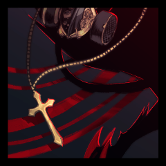

行動 ラタス5
GM
地図によれば、狂飆の頂にアプローチするにはここまでが刻限。
ラタス
「まずいな。地図に描いてあるよりも、ずっと手前にも暴風域が広がっている」
ラタス
堕落の国の荒廃に伴い、暴風域が地図を作られたころよりも広くなっている。
ラタス
辺りには木が一つも無い、滑らかな岩肌の山岳。
ラタス
すさまじい風に岩肌が削り取られて、すべすべになっている。
リリオ
「皆が行くなら、行かない訳にはいかないな～」
ラタス
「ここから先にいくってことがどういうことなのか、わかってるんだろうな」
リリオ
「生きて帰るには、誰か一人死ぬ必要がある」
こよみ
「帰って、ラタスのこどもたち、こどもたちと」
こよみ
「あるから、だからそれで、そういう話で……」
リリオ
「亡者になるって言うんだから、そうなるんじゃない？」
ユキ
あたしに思いつく程度のことをラタスとリリオが思いつかないはずがない。
ユキ
だから二人がそうするしかないと言うならきっとそうするしかなくて……。
リリオ
「こよみがラタスを殺すかどうか、僕に決めろって言ってる」
リリオ
故郷の話、ラタスから聞いた話、狂飆の頂の話をする。なんでもないことのように、世間話のように。
こよみ
ぐすぐすと鼻を鳴らし、しゃくりあげながら歩いている。
リリオ
「故郷が同じだから、説明しなくて済むこともあるし」
ユキ
「あたしたちが難しいことわかんないからってぇ……」
こよみ
とぼとぼしょぼしょぼとさり気なくラタスに寄っていきます……
ラタス
「まあ、強くなかったら選べもしないけどな」
ラタス
「もしかしたら目の前の相手も、自分も、大切な人も、助けられる方法があるかもしれない」
こよみ
Choice[猟奇,才覚,愛] (choice[猟奇,才覚,愛])
＞ 愛
こよみ
2d6+3>=7 (2D6+3>=7) ＞
8[2,6]+3 ＞ 11 ＞ 成功
ラタス
2d6-2+3>=7 (2D6-2+3>=7) ＞
9[6,3]+2-3 ＞ 8 ＞ 成功
[ こよみ ] HP : 20 → 19
ラタス
「おれたちは正しくないし、全部は選べないし、見捨てるし、切り捨てる」
ユキ
「かっこいい、ヒーローみたいになれるんだって」
ラタス
「おれは、殺す相手と自分の区別がつかなくても」
ラタス
「心が限界を迎えるまで、救世主を殺したことを」
こよみ
歩き出したラタスに、泣きながらそれでもついていく。
ラタス
進むにつれ、この世の終わりのような光景が深まっていく。
ユキ
それから自分でも涙を拭って、ラタスを追いかけた。
ラタス
地獄があるとするなら、こんな場所かも知れない。
行動 ユキ
狂飆の頂シーン表1D6
1 岩石の亡者だ！ 風にびくともせず動き回っている。まともに戦うのは得策ではない。幸い、こちらには気付いていないようだ。このままやり過ごそう。
2 すさまじい砂嵐だ！ ホワイトアウトし、立っているはずなのに前後左右どころか、上下すらもわからない。隣にいるはずの仲間にさえ声も届かない。
3 難所に突風が吹き付ける！ 仲間が崖から転落する。一人で這い上がるのは難しそうだ。
4 崩落だ！ 進もうとしていた先が崩れ落ち、砕けて風と散るのを見る。
5 洞穴だ。強風が落ち着くまでやり過ごそう。
6 風が凪いだ。束の間の休息をとるか、あるいは今のうちに先を急ぐか。
GM
すさまじい風の中を進む。ただ立ち止まっているだけでも休む余地は与えられない。
GM
強風だけではなく、滑りやすい足場に鋭利な岩、亡者。
GM
先は見えない。果たして本当に進んでいるのかも定かではない。
ユキ
洞穴に足を踏み入れて、へにゃへにゃと腰を下ろす。
こよみ
「だれかつらいとかいたいとか、怪我とかない？ ない？」
こよみ
「傷、傷あったらね、こよみなんとかできるからね」
こよみ
「こよみ舐められるからね、なんとかできるからね……」
こよみ
ひとしきり舐めて傷が塞がったところでそっと顔を離します。
こよみ
「傷はこよみ、こよみがなんとか、けっこうできる」
リリオ
あと3日で到着できない可能性も、なくはない。
ラタス
あるいはこうした休む余地というのも、本当はないのかもしれない。
ラタス
しかし、山を進んでいる間、まともな会話はできない。
こよみ
「できることする、休むし、休んだらがんばるよ」
ラタス
先を急ぐことと、限られた時間をともに過ごすこと、どちらが重要と言えるだろうか。
ラタス
煙がこもらないのを確認してから、火を焚く。
ユキ
今の状況での正解も最善もユキには分からない。
ユキ
分からないなら……したいようにするしかない。
ラタス
風雨で冷えた手足を、火とお互いの身体で温め合っている。
こよみ
「こよみでリリオちゃんあったかいなら、こよみ、こよみうれしいよ」
こよみ
「ユキちゃんもリリオちゃんもあったかいよ」
リリオ
自分が少しスペースを空けようと思っていたのだが、釘を刺されてしまった。
ユキ
2d6+3>=7 猟奇 (2D6+3>=7) ＞
6[4,2]+3 ＞ 9 ＞ 成功
[ こよみ ] 底なしの愛され願望 : 0 → 1
こよみ
こうしてくっついていると、受け入れられている、というのが分かる。
こよみ
「今こうできて、こよみ、こよみは嬉しいよ」
こよみ
「今できないより今できてるほうが、ずっといいよ」
ユキ
「……でもこよみがそう言うなら、あたしも許してあげるわ」
ユキ
すごすぎて比べて落ち込む気にもならなかったわ……
ユキ
こよみのやわらかい身体に寄りかかって、目を閉じる。
ユキ
あの夜、リリオを一人残して三人で夜を過ごしたのが、ずっとユキの心に引っかかっていた。
ユキ
リリオが断固として拒否した結果ではあったけど……。
ユキ
それでも、ユキもラタスもこよみもリリオが好きで、
ユキ
だから、一人を仲間外れにしたまま終わりたくなかった。
ユキ
ユキとこよみをラタスと過ごさせるのが、リリオのしたかったことなら、
ユキ
こうして四人で一緒にいるのが、ユキのしたいことだ。
ユキ
そうして大好きな人たちのぬくもりを感じながら、つかの間の眠りに落ちた。
行動 ラタス6
ラタス
「次にこうして話せる時間がとれるかもわからない」
ユキ
顔を見ることさえ、あとどれ程できるか分からない。
ラタス
「もとより、ハッピーな終わりなんて期待してはいなかった」
こよみ
ぎゅ、と胸元で手を合わせる。祈ることのできない手を。
ラタス
「どっかで野垂れ死ぬのが関の山だと思っていたんだが」
ラタス
「こんなに満たされたものになるとは思っていなかったぜ」
こよみ
祈りも当然に届かず、結局いつものように口元を覆った。
リリオ
ラタスは、もっと幸福になれたはずだ、と思う。
ユキ
「ラタスとリリオが拾ってくれなかったら、あたしきっと死んでたよ」
こよみ
「うれしいことだって、きっと全然なかった……」
ユキ
「いっぱい、いっぱいラタスに助けてもらった……」
ラタス
「急にクソみたいな世界に来て、大丈夫なわけないもんな」
ユキ
「こよみが、あたしのことかっこいいって言ってくれて、ね」
ラタス
「生きている理由がおれには必要だったように思う」
ラタス
「出会ってなかったら死んでたのはおれのほうかもな」
ラタス
「こよみもなあ。おまえはもっと自信をもっていいんだ」
こよみ
ラタスに声をかけられてごしごしと目を拭って、
ラタス
「でもまあ、お前は強いというか、したたかなやつだからな」
ラタス
「リリオとユキのこと、支えてやってほしい」
ラタス
「おれもこいつらも、けっこうお前に甘えてるんだぜ」
リリオ
「確かに、こよみに甘えている部分はあるな」
こよみ
「こよみできるもん、やるもん、したいもん」
こよみ
「ちゃんと、リリオちゃん、大丈夫なように」
ラタス
「やっぱり最後に童貞卒業できてよかったな！」
ラタス
「それこそ一人じゃどうにもならないことだからな！」
ラタス
一人じゃヤれないからみんなと来られてよかったぜ～
ラタス
「大切にしてるやつに想われてうれしくねえはずがねえよ」
ラタス
ただ時間を共にしていると言うことそれだけで
こよみ
ユキがされてるのを見て思わずユキをぎゅっとします。
ユキ
ぼろぼろと涙をこぼしながらそれを受け入れて、
ユキ
ラタスに比べれば短い腕を懸命に伸ばして、背中に回す。
ユキ
ぬくもりを、人工肺の駆動音を記憶に刻み込む。
ラタス
触れ合うほどに、まだ生きている、息をしているというのがわかり合う。
こよみ
ユキの背中には柔らかい肉、押しつけた頬には硬い管の温もり。
ラタス
ここにいて、少しでも何かが伝わり、残ることを願っている。
ユキ
出会ってから今までの全部、この時間の全部を。
ラタス
今どんなに強く抱きしめていても、抱きしめたままでいられない残酷さ。
ラタス
感傷と想い出が、その残酷さに抗い残るものであると願っている。
ユキ
息苦しいけど、二人の間から抜け出そうとはしない。
ユキ
こうしていられるのだって、残り僅かな時間だから。
こよみ
そのままこよみの方から、ラタスの唇にキスをする。
ラタス
「お前が与えたいと思ったやつにだけ、与えろ」
ラタス
「適当なやつにくれてやるには、上等すぎる」
ユキ
「こよみもこよみを大事にしないとダメなのよ……」
こよみ
「与えたくて、だから、リリオちゃんとユキちゃんと」
リリオ
「そうそう。僕たちの大事な人を、適当に扱ったら許さないよ」
リリオ
「言ってくれれば、ちょっとは見せたかもよ」
ラタス
「……上層と下層を隔てるプレートのように」
リリオ
ナイフを引いたらいいのか、そのままにした方がいいのか。
こよみ
ラタスとリリオの間に割って入れず、その場に立ち竦む。
ユキ
目を見開いて、息を呑んで、こよみに縋っている。
ラタス
二人の手が、一つの果実のような塊となっていて、赤く濡れている。
ラタス
わからないというのなら、聞かせてくれと命じる。
こよみ
Choice[猟奇,才覚,愛]
(choice[猟奇,才覚,愛])
＞ 愛
こよみ
2D6+3>=7 (2D6+3>=7) ＞
7[4,3]+3 ＞ 10 ＞ 成功
ラタス
2d6+3-4>=7 (2D6+3-4>=7) ＞
9[3,6]+3-4 ＞ 8 ＞ 成功
[ こよみ ] HP : 19 → 18
リリオ
どちらにしても、長い命ではなかった。
どちらにしても、別れるはずだった。
リリオ
救いたかった命なのに、諦めようと思ったのに
リリオ
殺したくなくても、もう心臓は突かれてしまった。
ラタス
あなたの手に滴るのは、今までラタスを活かしてきた血だ。
リリオ
子供のように、首を横に振る。
手を離そうともがく。
ラタス
「……じゃあ、こう言ってやればよかったか？」
ラタス
手を放さない。刃は深く突き立てられたまま。
リリオ
「分け合える人だけで分け合えばよかったのに」
リリオ
「言ってどうなるんだよ！無視してくれるのか！？」
ラタス
ナイフを深く突き立てたまま、もう一方の手でリリオの後頭部を抱え、引き寄せ、抱く。
ラタス
溢れて冷めた血の冷たさを分かち合う。赤い滴りの模様を転写する。
リリオ
これ以上傷付けたくない。
ラタスを殺したくない。
リリオ
体重を支えきれず、ずるずると地面に膝をつく。
GM
身体はただ冷たくなるばかりで、泣くあなたの頭を撫でたり、抱いたりすることはない。
GM
今このときまでに分かち合い、交わし合ったものが全て。
ユキ
後ろからこよみに抱きしめられて、ラタスとリリオの服をぎゅっと掴んだ。
リリオ
ユキとこよみも泣いている。
2人を泣かせている。
リリオ
格好つけていて、そんなことにはならなかったけれど。
リリオ
本当は、一番最初みたいに、2人だけで旅を続けたかった。
リリオ
でも、ユキに一緒に行こうと言ったのは自分で。
リリオ
困っていたように見えたから、放っておけなかった。
リリオ
この気持ちは、ないものとして扱おうと決めたのに。
リリオ
ラタスの躯を強く抱き、ユキとこよみの体温を感じる。
リリオ
冷えてゆく死者と、温かい生者に囲まれている。
[ リリオ ] 高潔な魂 : 1 → 0
GM
ラタスの胸に空いた傷口から、黒い煙が漏れ出す。
GM
黒いコートは煙の中で、その輪郭を曖昧にする。
GM
コートの中にかけていた、十字架のネックレスだけが金色に揺れている。
こよみ
こよみとユキとリリオをここまで連れてきたということは、
-
指の内側から肉を突き破って生えるのは、彼が得物にしてきた短剣。
-
五指は刃物の爪となり、もはやなぞるものを引き裂くためのものでしかない。
ユキ
どんなに泣いても駄々をこねても、ラタスの面影は失われていく。
リリオ
自分だけは落ち着いて、ラタスの望みを叶えようと思っていたのに！

-
黒い被毛に覆われた身体には、尚も首飾りが揺れていた。
-
マスクを被ったその目は、青い空を映し出している。
ブラッドスクーパー
その背に翼はなく、這う者に相応しい長い尾がのたうつ。
ブラッドスクーパー
被っていた帽子に似た耳が動く。
ブラッドスクーパー
身体を起こし、ゆらりと頭を持ち上げて咆哮する。
ブラッドスクーパー
あなたがたは一度それをしてきた。
ブラッドスクーパー
同じように果す以外にないだろう。